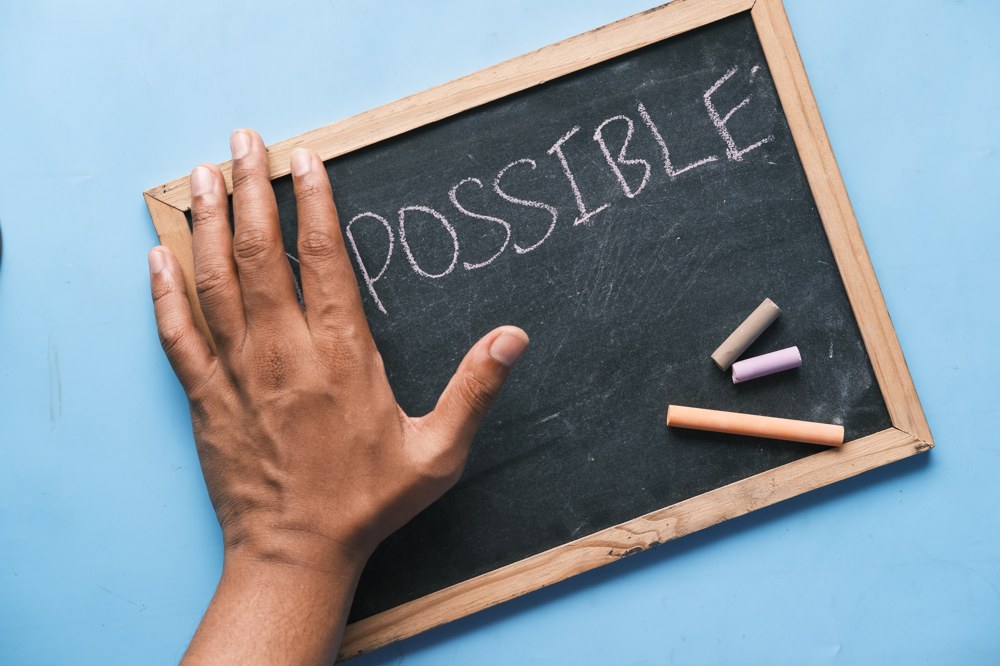

Our challenges
I was very excited for transitioning from upper-secondary school to university. It made me feel more responsible for my life, but soon my excitement converted into stress. The challenges of being a student were very new for me. It was hard to keep balance in life because of different challenges I faced as a first-year student.

No background knowledge
My biggest challenge is that I am not from computer background. That is why I did not realise in the start that we learn coding by practicing it, and we need a lot of practice. It is not something we see others doing and learn just like that. Learning to code is like learning a new language. Programming is very different than other subjects. It takes a lot of time to learn and to master it.
Frustration
I experienced frustration. There are times when I was discouraged because I was unable to find a mistake in my code. It is annoying when code is not running, and you try everything to make it run, and in the end, it is just a semi colon which is missing. One little typo can make your entire program stop. One need to work focused, and very accurate to get the results he or she wants. That is why it was and still is very challenging for me. This is also what makes it fun too. It is like we are learning all the time to be better. The feeling I get after solving the problem is the best feeling.
Feeling stupid
The major issue I had while learning java was the understanding about the use of code. Most of the code was simply not making any sense. It was very difficult to know that you know nothing about what the code says, but if you write this so it will be printed on the screen. I found it difficult to understand when to use different java classes and when to make them as private or public etc. Eventually all things make sense, but it takes time.

When we look at the work of other people, it looks very easy to do. My opinion changed when I started learning html and CSS. It is very difficult to create a website the way you wanted it to be. It is even difficult to stick to the plan you made before starting your website. Even though it sounds complicated, but its all part of coding fun. These are things which become more natural with time and experience, but in the beginning it is extremely challenging.
New reality
Another thing which I experienced is that time goes very fast with coding especially when I am stuck on a task. It makes difficult to have a balanced life. I found it hard to manage work, family and studies. As a result, I found almost no time for hobbies and socialising. All these experiences in the first year were new. It took me some time to realise the differences between high school life and university life. I think for most of the first-year students the real challenge is to learn how to study effectively and manage time better.

Getting there
Despite all the challenges coding is exciting. The most interesting thing about coding is it gives us endless opportunities with almost no limits. It is fun to make programs which can do whatever you want. The most amazing thing about coding is it makes us good problem solver. We can make our lives easy by coding.